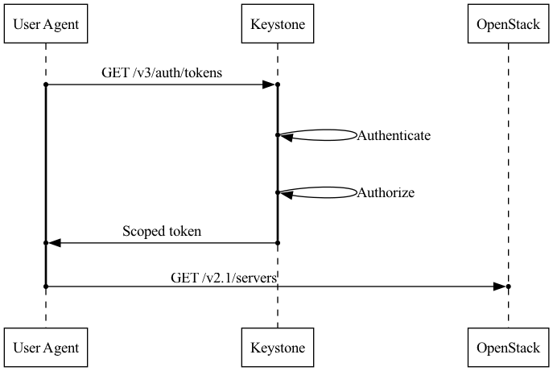
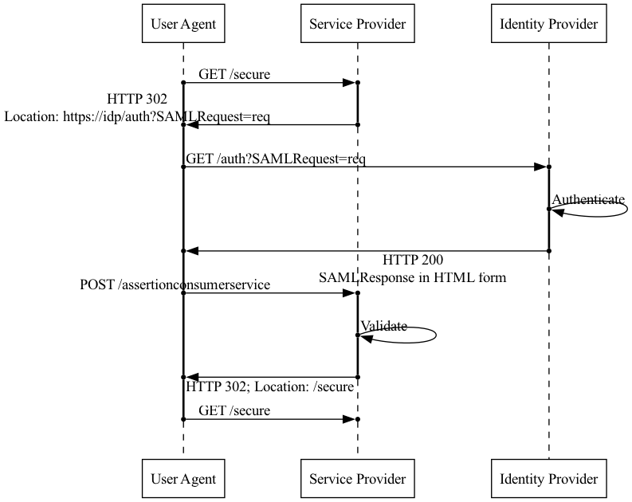
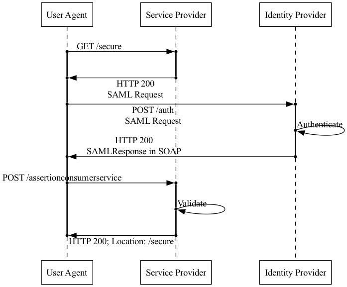
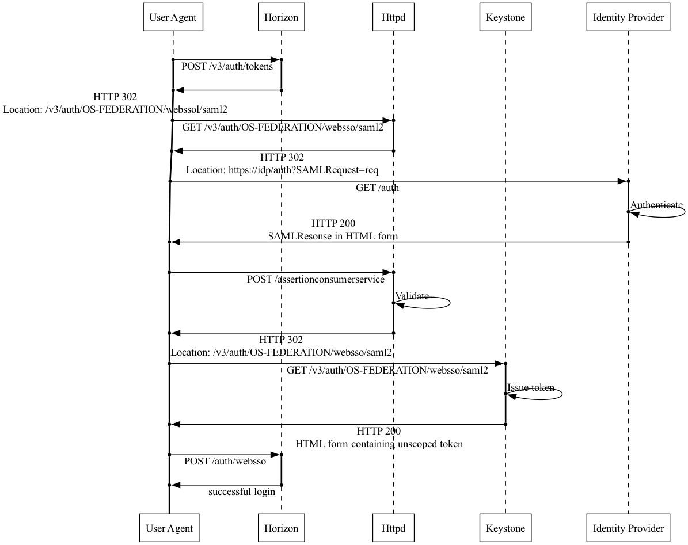
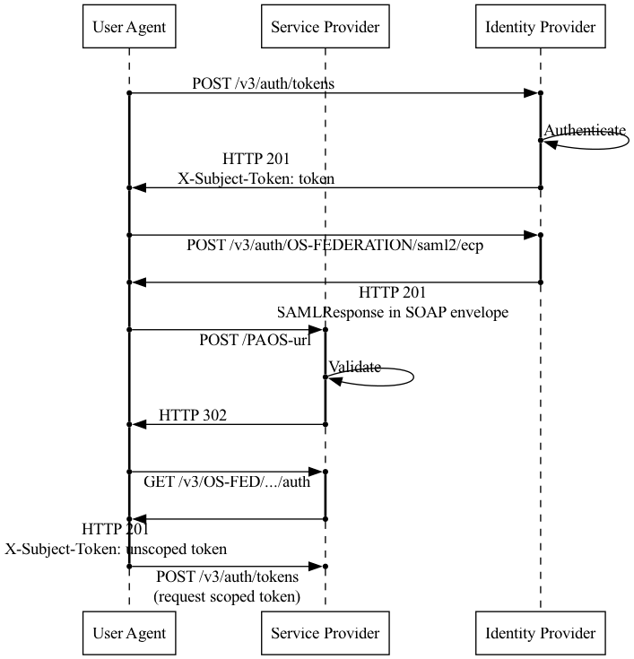
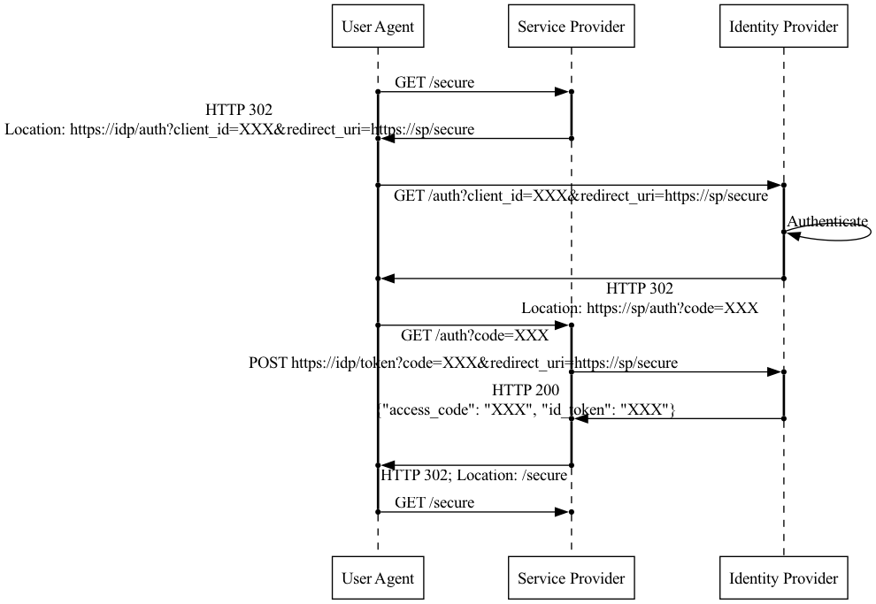
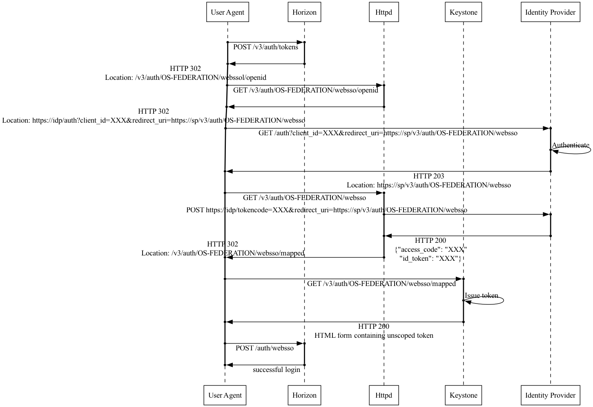

Introduction to Keystone Federation¶
What is keystone federation?¶
Identity federation is the ability to share identity information across multiple identity management systems. In keystone, this is implemented as an authentication method that allows users to authenticate directly with another identity source and then provides keystone with a set of user attributes. This is useful if your organization already has a primary identity source since it means users don’t need a separate set of credentials for the cloud. It is also useful for connecting multiple clouds together, as we can use a keystone in another cloud as an identity source. Using LDAP as an identity backend is another way for keystone to obtain identity information from an external source, but it requires keystone to handle passwords directly rather than offloading authentication to the external source.
Keystone supports two configuration models for federated identity. The most common configuration is with keystone as a Service Provider (SP), using an external Identity Provider, such as a Keycloak or Google, as the identity source and authentication method. The second type of configuration is “Keystone to Keystone”, where two keystones are linked with one acting as the identity source.
This document discusses identity federation involving a secondary identity management that acts as the source of truth concerning the users it contains, specifically covering the SAML2.0 and OpenID Connect protocols, although keystone can work with other protocols. A similar concept is external authentication whereby keystone is still the source of truth about its users but authentication is handled externally. Yet another closely related topic is tokenless authentication which uses some of the same constructs as described here but allows services to validate users without using keystone tokens.
Glossary¶
- Service Provider (SP)
A Service Provider is the service providing the resource an end-user is requesting. In our case, this is keystone, which provides keystone tokens that we use on other OpenStack services. We do NOT call the other OpenStack services “service providers”. The specific service we care about in this context is the token service, so that is our Service Provider.
- Identity Provider (IdP)
An Identity Provider is the service that accepts credentials, validates them, and generates a yay/nay response. It returns this response along with some other attributes about the user, such as their username, their display name, and whatever other details it stores and you’ve configured your Service Provider to accept.
- Entity ID or Remote ID
An Entity ID or a Remote ID are both names for a unique identifier string for either a Service Provider or an Identity Provider. It usually takes the form of a URN, but the URN does not need to be a resolvable URL. Remote IDs are globally unique. Two Identity Providers cannot be associated with the same remote ID. Keystone uses the remote ID retrieved from the HTTPD environment variables to match the incoming request with a trusted Identity Provider and render the appropriate authorization mapping.
- SAML2.0
SAML2.0 is an XML-based federation protocol. It is commonly used in internal-facing organizations, such as a university or business in which IT services are provided to members of the organization.
- OpenID Connect (OpenIDC)
OpenID Connect is a JSON-based federation protocol built on OAuth 2.0. It’s used more often by public-facing services like Google.
- Assertion
An assertion is a formatted statement from the Identity Provider that asserts that a user is authenticated and provides some attributes about the user. The Identity Provider always signs the assertion and typically encrypts it as well.
- Single Sign-On (SSO)
Single Sign-On is a mechanism related to identity federation whereby a user may log in to their identity management system and be granted a token or ticket that allows them access to multiple Service Providers.
Authentication Flows¶
Understanding the flow of information as a user moves through the authentication process is key to being able to debug later on.
Normal keystone¶

In a normal keystone flow, the user requests a scoped token directly from keystone. Keystone accepts their credentials and checks them against its local storage or against its LDAP backend. Then it checks the scope that the user is requesting, ensuring they have the correct role assignments, and produces a scoped token. The user can use the scoped token to do something else in OpenStack, like request servers, but everything that happens after the token is produced is irrelevant to this discussion.
SAML2.0¶
SAML2.0 WebSSO¶

This diagram shows a standard WebSSO authentication flow, not one involving keystone. WebSSO is one of a few SAML2.0 profiles. It is based on the idea that a web browser will be acting as an intermediary and so the flow involves concepts that a browser can understand and act on, like HTTP redirects and HTML forms.
First, the user uses their web browser to request some secure resource from the Service Provider. The Service Provider detects that the user isn’t authenticated yet, so it generates a SAML Request which it base64 encodes, and then issues an HTTP redirect to the Identity Provider.
The browser follows the redirect and presents the SAML Request to the Identity Provider. The user is prompted to authenticate, probably by filling out a username and password in a login page. The Identity Provider responds with an HTTP success and generates a SAML Response with an HTML form.
The browser automatically POSTs the form back to the Service Provider, which validates the SAML Response. The Service Provider finally issues another redirect back to the original resource the user had requested.
SAML2.0 ECP¶

ECP is another SAML profile. Generally the flow is similar to the WebSSO flow, but it is designed for a client that natively understands SAML, for example the keystoneauth library (and therefore also the python-openstackclient CLI tool). ECP is slightly different from the browser-based flow and is not supported by all SAML2.0 IdPs, and so getting WebSSO working does not necessarily mean ECP is working correctly, or vice versa. ECP support must often be turned on explicitly in the Identity Provider.
WebSSO with keystone and horizon¶

Keystone is not a web front-end, which means horizon needs to handle some parts of being a Service Provider to implement WebSSO.
In the diagram above, horizon is added, and keystone and HTTPD are split out from each other to distinguish which parts each are responsible for, though typically both together are referred to as the Service Provider.
In this model, the user requests to log in to horizon by selecting a federated authentication method from a dropdown menu. Horizon automatically generates a keystone URL based on the Identity Provider and protocol selected and redirects the browser to keystone. That location is equivalent to the /secure resource in the SAML2.0 WebSSO diagram. The browser follows the redirect, and the HTTPD module detects that the user isn’t logged in yet and issues another redirect to the Identity Provider with a SAML Request. At this point, the flow is the same as in the normal WebSSO model. The user logs into the Identity Provider, a SAML Response is POSTed back to the Service Provider, where the HTTPD module validates the response and issues a redirect back to the location that horizon had originally requested, which is a special federation auth endpoint. At this point keystone is able to grant an unscoped token, which it hands off as another HTML form. The browser will POST that back to horizon, which triggers the normal login process, picking a project to scope to and getting a scoped token from keystone.
Note that horizon is acting as a middleman, since it knows the endpoint of the secure resource it requests from keystone.
Keystone to Keystone¶

When keystone is used as an Identity Provider in a Keystone to Keystone configuration, the auth flow is nonstandard. It is similar to an IdP-initiated auth flow. In this case, the user goes directly to the Identity Provider first before requesting any resource from the Service Provider. The user will get a token from keystone, then use that to request a SAML Response via ECP. When it gets that response back, it POSTs that to the Service Provider, which will grant a token for it.
Notice that the Service Provider has to accept data from the Identity Provider and therefore needs to have a way of trusting it. The Identity Provider, on the other hand, never has to accept data from the Service Provider. There is no back and forth, the user simply completes the auth process on one side and presents the result to the other side.
OpenID Connect¶
OpenID Connect Authentication Flow¶

OpenID Connect is different from any SAML2.0 flow because the negotiation is not handled entirely through the client. The Service Provider must make a request directly to the Identity Provider, which means this flow would not be appropriate if the Service Provider and Identity Provider are in segregated networks.
When the user requests a secure resource from the Service Provider, they are redirected to the Identity Provider to log in. The Identity Provider then redirects the user back to the Service Provider using a known redirect URI and providing an authorization code. The Service Provider must then make a back-channel request directly to the Identity Provider using the provided code, and exchange it for an ID token.
OpenID Connect with keystone and horizon¶

From horizon and keystone’s point of view, the authentication flow is the same for OpenID Connect as it is for SAML2.0. It is only the HTTPD OpenIDC module that must handle the flow in accordance with the spec.